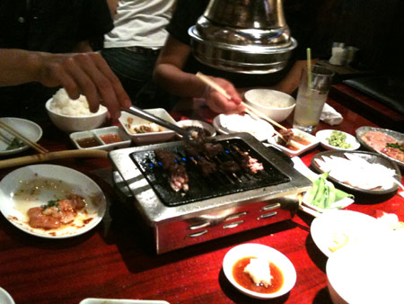

2010年6月 の記事
-
06/29のツイートまとめ
kaniaji どっきどきで血圧上がるわー 06-29 23:37 @matchan4649 ぐふふ。爽快な感じで羨ましかった！チャレンジかぁーf^_^;) 06-29 23:35 そーいえば…
-
はさまれ猫
かわええ 猫ってなんでこーもおっちょこちょいなのか。 挟まれたり、落っこちたり、高いトコから降りられなくなったり。 まーそこが可愛いんだけどね。 実家で飼っていたねこも、近所の倉庫に忍び込んで出ら…
-
06/28のツイートまとめ
kaniaji なんか思いつきでベッドの位置を変えてみた。部屋のど真ん中どーん！ 06-28 22:43 花の子ルンルンが追い求めたものはこれかー http://twitpic.com/20lb2…
-
06/27のツイートまとめ
kaniaji 早起き！この時間ってテレビショッピングだらけなんだねー。朝から誘惑… 06-27 05:26
-
06/26のツイートまとめ
kaniaji 【今日のポタリング】おっぱい丸出しのおばちゃんを見る。 06-26 17:49 【今日のポタリング】上野の裏道でタクシーの運ちゃんにイイ銭湯を勧められる。井戸水使ってるって。@燕湯…
-
06/25のツイートまとめ
kaniaji 台湾産のアップルマンゴー買ってきた！食べた！うー！やっぱり現地じゃないとあの味じゃないのね！ 06-25 21:17
-
06/24のツイートまとめ
kaniaji 他人が作ったコードをいじるのって、ひとんち荒らしているよーな気分になるんですが。 06-24 12:11
-
06/23のツイートまとめ
kaniaji あー。昼が長いのも今のうちー。まだちょびっと明るいうちに帰るっていいなー。 06-23 19:14 隅田川花火大会のマナーページが、遠足前の校長先生のお話みたいでちょっとイイ。～な…
-
06/22のツイートまとめ
kaniaji 王将のギョーザ食べに行く！何年ぶりかしらー。らら～♪ 06-22 19:36 今日のお弁当はホットサンド（玉子とトマト）とチキンナゲット、トマトスープ。緑色に乏しいからスキマに紫蘇…
-
脂好き90歳。健康のひけつ
なんどかウチのオバーちゃんの豪傑っぷりを書いているのだけど、 90過ぎても相変わらず。 好物はカップスター（なぜかカップヌードルはダメらしい） たまにペヤング（UFOはダメらしい） まれにどん兵衛（…

-
06/21のツイートまとめ
kaniaji うむ！380円ワインは良くも悪くも安ワインの味。でもこの価格帯はありえん。980円でも似たような味あり。冷やして飲むのがよし。 06-21 23:04 私が育てているトックリキワタ…
-
06/20のツイートまとめ
kaniaji 図書館から借りた台湾鉄道完全ガイドがイイ！振子式特急太魯閣乗りたいなー。私が大好きなJR九州のかもめー！台鉄イイ… 06-20 23:33 図書館で借りてきたニャ夢ウェイがおもろい…
-
オランダ戦とワインとMJ
日本全国大盛り上がりのワールドカップオランダ戦当日にもかかわらず、TOKIAで食事。 白レバムースと鴨ロースト、オランダ戦だとゆーことでオランダ産のホワイトアスパラ なんか魚も美味しそうだなー 白…

-
家族焼肉
弟＆妹のオゴリで焼肉！ホルモン！ こんな日が来るとはなー。 ちなみに親には焼肉屋さんに連れて行ってもらったことありませんの。 外食ってラーメンか蕎麦屋かファミレスかって感じだったのよね。 だから、今…

-
06/19のツイートまとめ
kaniaji パブリックビューイング帰り。行くつもりなかったけど、行ったら行ったで楽しいな。試合後、久しぶりに踊ったー http://twitpic.com/1y5126 06-19 23:37 …
-
06/18のツイートまとめ
kaniaji 金曜夜にキアヌが出てる映画を見る、片手にワイン。甘露甘露。 06-18 21:56 台北行きから2週間。なんか台湾って中毒性あるんじゃないだろか。あーまた夜市だらだら歩きたい。 …
-
06/17のツイートまとめ
kaniaji しかし、しゃぶしゃぶとスパークリングワインは最高。ちょっと酸味があるタイプと組み合わせるのが好き。ロゼスパークリングもいい。 06-17 21:48 暑っついのに、しゃぶしゃぶ食べ…
-
06/16のツイートまとめ
kaniaji 久しぶりのマツパー帰り。ここんとこエクステ派だったけど、某睫毛育毛剤の効果が出てきたから地睫毛勝負。 06-16 20:53 きょうのお昼は、定例の女子外ごはん。昨晩の飲み会の反省…
-
06/15のツイートまとめ
kaniaji むー！英語車内アナウンスを聞くと旅心にスイッチ入っちゃうよ！こないだの旅行は点火前に薪をくべた感じだ。 06-15 23:00 隣のボックスシートでコロッケと缶チューハイの宴会開催…
-
06/14のツイートまとめ
kaniaji 生姜の炊込みおいしそう。夏は茗荷と紫蘇と胡麻の混ぜご飯も私的定番。 RT @doiyoshiharu 具は変えた方がいいと思います。夏には 大人向きですが、「生姜の炊き込みごはん」とか…
-
台北4
さて最終日。 昨晩は「ゴ」が出なかったみたい。ちょっと肌寒かったせいかなー…とその代わり起きたらノドが痛い。 あー！風邪引きはじめだー。 というわけで、薬局でトローチ購入。 錠剤のパックが毒色ですが…

-
台北3
さて3日目です。 昨晩も、ドミトリーの女の子たちが「ゴ」の方とお戯れ。 まーこんな感じのとこだから「ゴ」のお方も大所帯だろーなー MRTに乗って西門に移動 招き猫。結構店の前とかでみかける。…

-
台北2
台北2日目です。 昨晩は、早々に寝たのだけど、夜中、ドミトリーの女の子がきゃあきゃあ言っている声で目が覚めた。 どーも「ゴ」の方がお出ましになった様子。 キッチンは清潔とは言えない感じだったもんなー。…

-
ぶらり台湾・台北
JALのマイレージが直近で1万5千マイルほど消失することが判明し、急遽出掛けてまいりました。 期限マイル分を使おうとゆーことで、行き先は台北。 成田では特に見るものもないので、ギリギリチェックインして…

-
アペリティフの日＠六本木
6月4日はアペリティフの日とゆーことで、六本木のイベントに参加。 日本全国各地でアペリティフの日イベントが行われているけど、ここが総本山。なにしろ4部構成！参加は3部目。 会場30分前から並んだお…